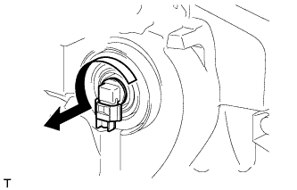

ФАРА В СБОРЕ (для моделей с галогенными фарами) > РАЗБОРКА |
| 1. СНИМИТЕ ЛАМПУ ФАРЫ № 1 |
 |
Поверните лампу в направлении, указанном стрелкой, и снимите ее.
| 2. СНИМИТЕ ЛАМПУ ФАРЫ № 2 |
|  |
Поверните лампу в направлении, указанном стрелкой, и снимите ее.
| 3. СНИМИТЕ ЛАМПУ ГАБАРИТНОГО ФОНАРЯ |
 |
Поверните патрон в направлении, указанном стрелкой, и снимите его.
Снимите лампу.
| 4. СНИМИТЕ ПАТРОН ЛАМПЫ ПЕРЕДНЕГО УКАЗАТЕЛЯ ПОВОРОТА |
 |
Поверните патрон в направлении, указанном стрелкой, и снимите его.
| 5. СНИМИТЕ ЛАМПУ ПЕРЕДНЕГО УКАЗАТЕЛЯ ПОВОРОТА |
Снимите лампу.
| 6. СНИМИТЕ ЛЕВЫЙ ЭЛЕКТРОДВИГАТЕЛЬ СИСТЕМЫ УПРАВЛЕНИЯ УРОВНЕМ ФАР (для моделей с системой управления уровнем фар) |
Поверните винт регулировки в направлении, указанном стрелкой, и выверните винт отражателя.
Поверните электродвигатель управления уровнем фары в направлении, указанном на рисунке стрелкой, и снимите его.